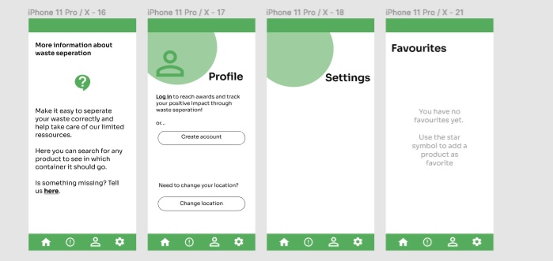

A waste separation application

The problem:
In Aarhus Kommune the waste-seperation is divided into these categories (source: affaldvarme.dk):
- Paper and cardboard
- Plastic, glass and metal
- Remaining waste
- Batteries
Personally, when separating trash in my home and at the joint containers that are used in the city, I often doubt whether I do it correctly. The consequences of this problem could be that the waste is being thrown into the wrong containers or not even separated as it should and just ends up in the remaining waste – and then what is really the need to go through the pricy process of separating waste and recycling it if it’s done wrong? By assuming more people had the same problem as myself (because of lack of time to dig into this hypothesis) I started creating a solution.
The solution:
I've made an application suitable for smartphones, so it's easy for people to search items in
the kitchen or outside when doing the separation. The user can search for every item and gets
information about how it should be separated correctly and if different parts of it should be
separated differently.
You can try the mobile prototype for yourself if you follow
this link (will open in Figma).